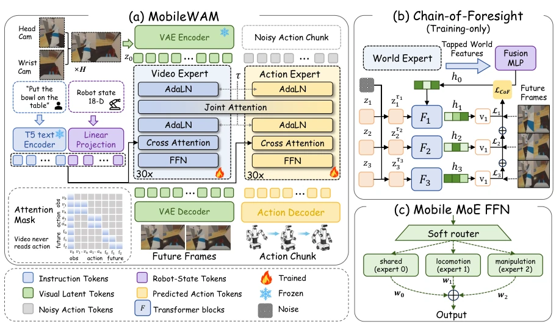
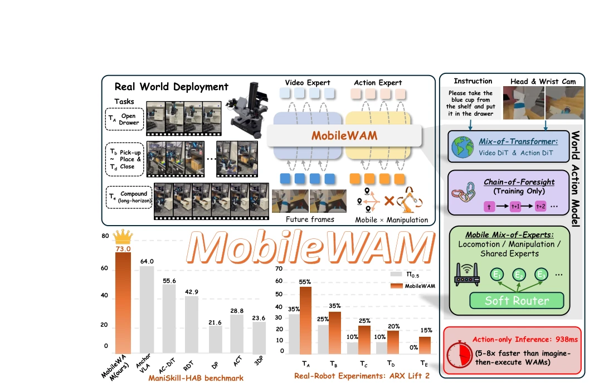
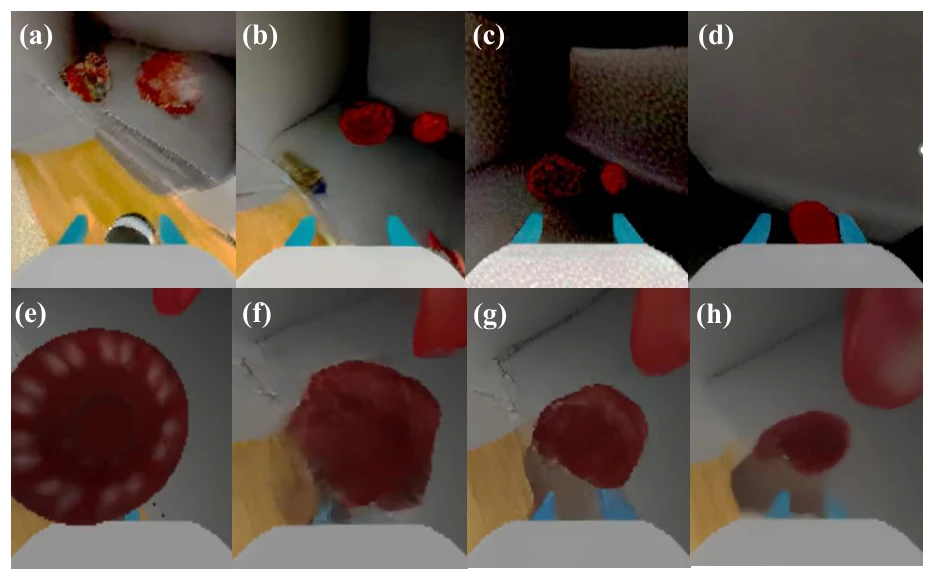

MobileWAM attempts to forcefully integrate the video generative World Action Model (WAM) into the mobile manipulation domain, a move that is quite risky. It claims that mobile manipulation is not a simple superposition of "navigation + manipulation", but a multiplicative coupling, which is reasonable, as the camera moves with the base, and if the causal chain breaks, it fails completely. The paper's biggest highlight is "speed"; during inference, video generation and the foresight chain are directly removed, keeping only the current frame encoding, which is 5-8 times faster than Motus, which is extremely important for mobile devices. However, the Chain-of-Foresight (CoF) of "foresight during training, discard during inference" is somewhat like feeding the model a mind-altering potion; although gradients can be propagated back, it is truly unknown if it is metaphysics, since it is invisible during inference. RGB-only input achieves a 73% success rate in simulation, but on the real robot ARX Lift2, long-horizon tasks are only 15%; this gap indicates that the pitfalls in the physical world are much deeper than in simulation. Overall, the architecture design has ingenuity, but do not expect RGB to solve all perception problems, especially when grasping edge objects, where localization errors account for the majority.
研究动机Motivation
现有 WAM 如 Motus (Bi et al., 2026) 多局限于固定基座桌面操作，忽略了移动带来的自运动（ego-motion）和长程因果依赖。Lim et al. (2026) 指出移动操作具有多模态性，基座路径选择多，且早期导航错误会无声地毁掉后续抓取。当前移动操作主流方案如 AC-DiT (Chen et al., 2025b) 依赖点云或两阶段训练，π0.5 (Black et al., 2025) 虽强但缺乏物理世界动态先验。MobileWAM 旨在填补这一空白，利用互联网级视频预训练的运动先验，解决移动与操作动力学异构问题，避免手工设计的协调接口泄露误差。
Existing WAMs such as Motus (Bi et al., 2026) are mostly limited to fixed-base desktop manipulation, ignoring ego-motion and long-range causal dependencies brought by mobility. Lim et al. (2026) point out that mobile manipulation is multimodal, with many base path choices, and early navigation errors can silently ruin subsequent grasps. Current mainstream mobile manipulation solutions such as AC-DiT (Chen et al., 2025b) rely on point clouds or two-stage training, while π0.5 (Black et al., 2025) is strong but lacks physical world dynamic priors. MobileWAM aims to fill this gap, utilizing internet-level video pre-trained motion priors to solve the heterogeneity problem between mobile and manipulation dynamics, avoiding leakage errors from manually designed coordination interfaces.
The overall architecture is based on a pre-trained video diffusion Transformer, fusing world experts and lightweight action experts through inter-layer joint attention. There are three core innovations: first is Mobile MoE, where the action expert's feedforward layer is replaced by three experts (shared, mobile, manipulation), routed by motion intent soft routing, solving the dynamic conflict between base movement and manipulator operation; second is Chain-of-Foresight (CoF), which predicts future latent blocks via RNN-style chain prediction during training, using intermediate layer gradients to constrain the current frame encoding to contain physical dynamics, discarded directly during inference at zero cost; third is decoupled denoising, where video and action denoising are completely separated; during inference, only current frame features are cached, and action tokens iteratively denoise. This design allows the model to achieve strategy-like low-latency inference while maintaining WAM physical priors.

Figure 2 MobileWAM architecture. (a) Main model. The world and action experts fuse via asymmetric layerwise joint attention (actions read visuals; visuals never read actions); language and proprioception are injected via per-block cross-attention; every feed-forward layer of the action expert is a three-expert mobile MoE (shared ⊕locomotion ⊕ manipulation) softly routed by motion-intent embeddings. (b) Chain-of-Foresight. Four uniformly spaced backbone layers fuse into belief h0; depth-specific F1, F2, F3 (separate weights, init. from later backbone blocks) chain over f0, f1, f2, each attending to the previous belief and current observation. Weights w1>w2>w3 discount farther futures. The CoF branch is discarded at inference. (c) Attention mask. Token groups: v0 (current observation, clean
On the ManiSkill-HAB simulation benchmark, MobileWAM uses only RGB input and single-stage training, achieving an average success rate of 73.0%, significantly outperforming AC-DiT (55.6%) and AnchorVLA (64.0%). Ablation studies show CoF improves by 3.5%, Mobile MoE improves by 4.1%, and serial foresight outperforms parallel. Real-robot experiments on ARX Lift2 compared to π0.5, long-horizon task Te success rate 15% vs 0%, proving the value of the causal chain for long-horizon tasks. Inference latency is only 938ms, 5.3 times faster than Motus. However, failure analysis shows that localization errors account for 40% when grasping edge objects, indicating that perception robustness still has bottlenecks.

Figure 1 MobileWAM at a glance. Top-left: five real-robot tasks of increasing horizon (Ta–Te) on an ARX Lift2. Top-center/right: Mixture-of-Transformers fuses video and action experts; Chain-of-Foresight (training only) chains future-latent predictions via an RNN-style belief; Mobile MoE routes locomotion, manipulation, and shared experts via a soft router. Bottom-left: ManiSkill-HAB mean S.R. 73.0%, leading all listed baselines. Bottom-right: real-robot success rates vs. π0.5 across Ta–Te; action-only inference at 938 ms is 5–8× faster than generate-then-act WAMs.

Figure 3 Generated futures during fridge picking. (a)–(d): our full model (CoF + mobile MoE); (e)–(h): the Wan backbone merely fine-tuned on the same data. Ours preserves perspective and shape consistency under base motion; the baseline distorts both.